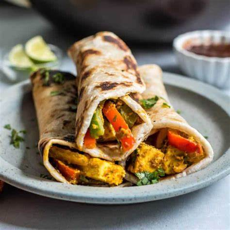

My Paneer Roll recipe is one of the best kathi roll (or frankie or wrap) that I have ever made; I can honestly say it beats the ones that street vendors in Calcutta sell! Paneer tikka, green chutney, and a mixed veggie salad are wrapped in a whole wheat roti for a healthy, tasty and portable lunch.
In this paneer roll recipe, the stuffing is a lip-smacking paneer tikka made on skillet, a vibrant green chutney and a crunchy mixed veggie salad. The outer wrap is made with whole wheat dough. Overall, this is a nutritious and delicious vegetarian paneer kathi roll recipe!
You can serve the paneer wrap as an evening snack, lunch, or brunch. There is some prep work required for making the green chutney and the salad topping, but preparing these components is simple. If you have leftover whole wheat dough, then the recipe is relatively quick and easy.
Don’t get discouraged when you see the number of steps for making this delicious street food – I promise they’re all quite simple!
1. In a mixing bowl, take 6 tablespoons hung curd or greek yogurt.
2. Add the following list of herbs and spices:
3. Mix very well.
4. Add 1 teaspoon lemon juice and mix again.
5. Now add 200 grams cubed paneer.
6. Gently mix so the marinade coats the paneer cubes evenly. Cover and keep aside for 30 minutes. If keeping for more than 30 minutes, then refrigerate.
Make Ahead Tip: If you want to work ahead, paneer tikka can be marinated up to 1 day in advance.
7. Take the below listed ingredients in a blender or small grinder:
½ cup coriander leaves
½ cup mint leaves
1 green chilli or ½ teaspoon chopped green chilies
1 inch ginger
1 to 2 small garlic cloves
¼ teaspoon dry mango powder (amchur powder) OR ½ teaspoon chaat masala – optional
½ teaspoon roasted cumin powder
8. Add 1 teaspoon water (OPTIONAL) and grind coarsely. Since the coriander and mint leaves are rinsed, the moisture from them helps in grinding.
9. Then add 2 tablespoons hung yogurt or thick curd.
10. Grind to a smooth chutney. Remove in a bowl and keep aside.
Make Ahead Tip: Green chutney will keep in the refrigerator for up to 1 day.
11. Thinly slice 1 medium onion. Grate carrots and shred or thinly slice the cabbage and capsicum (bell pepper).
In total, you will need ⅓ cup thinly sliced cabbage, ⅓ cup grated carrot, ⅓ cup thinly sliced capsicum and ⅓ cup thinly sliced onions.
12. Take all the veggies in a bowl. Add 1 teaspoon chaat masala, ¼ teaspoon Kashmiri red chilli powder, 1 teaspoon lemon juice, and salt to taste.
13. Mix very well and keep aside.
14. Add 1 cup whole wheat flour (atta) and ¼ teaspoon salt to a large mixing bowl.
15. Then add ½ tablespoon oil and gradually add ½ cup water. Start by adding ¼ cup water in this step, and add the remaining water as needed during kneading.
16. Begin to knead. Add water as required and knead to a smooth, soft dough. Cover the dough and keep aside for it to rest for 20 to 30 minutes.
17. After 20 to 30 minutes, divide the dough into small or medium sized balls, depending on the size of the wraps you want to make. You can also make mini wraps as an appetizer if you’d like.
18. Dust the dough ball with some flour.
19. Gently roll to thin roti. The roti should not be thick. You can add more flour if needed while rolling.
20. Place the roti on a hot tawa.
21. Cook the base till you see bubbles appearing on the roti, or the roti is approximately ¼ cooked.
Note that the tawa should be hot, so cook on a medium-high to high flame. If you make them on a low heat, the roti will become hard or crisp.
22. Then flip roti.
23. Spread some oil all over.
24. Then flip again when the second side is ½ cooked.
25. Spread some oil on this side too. You will see golden blisters on the roti.
26. Flip once or twice more for even roasting. Press the edges with spatula, so that the edges are also cooked well.
27. Cook till the roti has some golden blisters across it. Remove and keep the roti warm in a roti basket or casserole. Prepare all rotis this way, keeping them warm as you work.
28. This is the marinated paneer after 30 minutes.
29. Heat 2 tablespoons neutral oil in a pan. Keep the flame to low or medium-low and add the marinated paneer cubes.
Using thick yogurt or hung curd means the marinade coated the paneer pieces very well. If you have used thin yogurt, then just add the paneer cubes and don’t pour in the leftover marinade.
Instead of pan frying, you can also grill paneer cubes in the oven.
30. After a minute turn over the paneer cubes.
31. Pan fry the paneer cubes, turning often till the marinade is cooked and the paneer becomes soft.
32. Keep stirring and turning the cubes at intervals. Also, be sure to use a well seasoned pan or a non-stick pan to prevent the paneer cubes from tearing.
33. Once the paneer is done, remove the pan from the flame and keep aside. I cooked the paneer for about 4 minutes on a medium-low heat.
Do not cook too much, or the paneer will become chewy and dense! Timing will vary depending on the thickness of the pan, intensity of the flame, etc.
34. Take one roti.
35. Spread the mint-coriander-curd chutney over it. If packing for a tiffin, do not spread the chutney on the roti. Pack it separately.
36. Place the paneer tikka cubes on the center third of the roti.
37. Top with the veg salad. If packing for a tiffin, do not add the veg salad to the roll; pack it separately.
38. Roll both the sides of the roti and make a wrap.
39. Wrap the bottom half of the rolls in butter paper or aluminum foil to keep the filling from falling out while eating. If packing the paneer kathi roll for tiffin, then wrap the entire roll in aluminum foil.
40. Serve paneer wrap with the remaining chutney and veggie salad on the side. They’re also quite good with Tomato Ketchup.